| คัมภีร์บันทึกชาวค่าย | 1 | 47 | ไม่มีธาตุ | มันฝรั่งเดินได้ 0.25% |
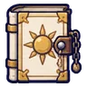 คัมภีร์ตะวัน | 1 | 44 | ไม่มีธาตุ | อาวุธเริ่มต้นของสาย (ได้ตอนเปลี่ยนอาชีพ) |
| คัมภีร์ใบไม้ | 4 | 48 | ลม | อีกาขโมยข้าวโพด ร่างขนแดง 0.25% |
 คัมภีร์แผ่นหิน คัมภีร์แผ่นหิน | 7 | 49 | ไม่มีธาตุ | โจรปล้นคาราวาน 0.25% |
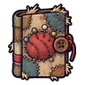 คัมภีร์ตุ๊กตาฟางเย็บแผล | 10 | 44 | ดิน | ตุ๊กตาฟางเย็บแผล 0.12% |
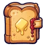 คัมภีร์ขนมปังปิ้ง | 10 | 44 | ไม่มีธาตุ | หนูนาขโมยข้าว 0.12% |
| คัมภีร์ใยแมงมุม | 13 | 44 | พิษ | แมงมุมถ้ำ 0.12% |
 คัมภีร์กบบึง คัมภีร์กบบึง | 16 | 42 | น้ำ | กบบึงใส 0.06% |
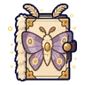 คัมภีร์ผีเสื้อราตรี | 19 | 42 | ศักดิ์สิทธิ์ | ผีเสื้อราตรีเรืองแสง 0.06% |
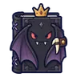 คัมภีร์ราชาค้างคาว | 23 | 58 | มืด | ราตรีราชาค้างคาว 0.5% |
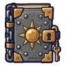 คัมภีร์ปกเหล็ก | 26 | 79 | ไม่มีธาตุ | มดขุดอุโมงค์ 0.25% |
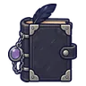 คัมภีร์บัญชีอีกาพ่อบ้าน | 28 | 92 | มืด | อีกาพ่อบ้าน ร่างเสื้อกั๊กเขียว 0.06% |
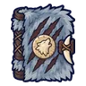 คัมภีร์ขนหมาป่า | 28 | 77 | มืด | อีกาสุสาน 0.25% |
| คัมภีร์โลงศพกัด | 28 | 71 | มืด | โลงศพกัด ร่างไม้ม่วง 0.24% |
| คัมภีร์ตอไม้ผี | 31 | 75 | ไม่มีธาตุ | ยุงยักษ์ 0.25% |
 คัมภีร์ขนแกะเมฆ คัมภีร์ขนแกะเมฆ | 33 | 71 | ลม | ภูตพายุหิมะ 0.12% |
| คัมภีร์ผีผ้าคลุม | 35 | 68 | วิญญาณ | ภูตเถ้าถ่าน 0.06% |
| คัมภีร์ราชาเห็ดเรืองแสง | 37 | 92 | พิษ | ราชาเห็ดเรืองแสง 0.5% |
| คัมภีร์หางจิ้งจอกถ่าน | 38 | 68 | ไฟ | จิ้งจอกถ่านแดง 0.06% |
| คัมภีร์แมงป่องแดง | 40 | 71 | พิษ | แมงป่องแดง 0.12% |
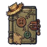 คัมภีร์ผ้าปะซอมบี้ | 42 | 71 | ไม่มีธาตุ | ซอมบี้ชาวนา 0.12% |
| คัมภีร์อินทรีพายุ | 44 | 68 | ลม | อินทรีพายุ 0.06% |
| คัมภีร์โหลหิ่งห้อย | 46 | 71 | ศักดิ์สิทธิ์ | ผีเสื้อราตรีเรืองแสง 0.12% |
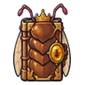 คัมภีร์นางพญามด | 49 | 92 | ดิน | รังนางพญามด 0.5% |
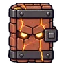 คัมภีร์อิฐโกเลม | 51 | 109 | ไม่มีธาตุ | หนูคลอง 0.25% |
| คัมภีร์นักดูดาว | 54 | 106 | ไม่มีธาตุ | ใบมีดกระดาษ 0.25% |
| คัมภีร์งูหนองพัน | 56 | 98 | พิษ | งูหนองพิษ 0.12% |
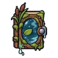 คัมภีร์บึงหมอก | 58 | 98 | น้ำ | แพะภูเขา 0.12% |
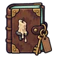 คัมภีร์สมุดทะเบียนโรงเตี๊ยม | 60 | 93 | วิญญาณ | ผีเจ้าของโรงเตี๊ยม 0.06% |
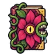 คัมภีร์ดอกไม้กินคน | 61 | 98 | ไม่มีธาตุ | ดอกไม้กินคน 0.12% |
| คัมภีร์ซาลาแมนเดอร์ | 63 | 93 | ไฟ | ซาลาแมนเดอร์ 0.06% |
| คัมภีร์ภูตหมอกเงา | 66 | 93 | มืด | ยามกลวง 0.06% |
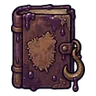 คัมภีร์บ่อย้อม | 68 | 98 | พิษ | สไลม์บ่อย้อม ร่างย้อมคราม 0.24% |
| คัมภีร์อัศวินกระดูก | 68 | 98 | ไม่มีธาตุ | อัศวินกระดูก 0.12% |
| คัมภีร์ภาพลวงตา | 70 | 93 | ไฟ | ภูตภาพลวงตา ร่างภาพลวงฟ้า 0.12% |
| คัมภีร์เทียนวิญญาณ | 70 | 93 | ศักดิ์สิทธิ์ | วิญญาณเทียน 0.06% |
| คัมภีร์ราชาสุสาน | 73 | 127 | วิญญาณ | บัลลังก์ราชาสุสาน 0.5% |
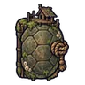 คัมภีร์เต่าแพบ้าน | 76 | 134 | น้ำ | เต่าแพบ้าน 0.25% |
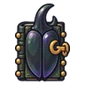 คัมภีร์กระดองด้วงแรด | 76 | 130 | ไม่มีธาตุ | ด้วงแรดยักษ์ 0.25% |
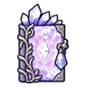 คัมภีร์ผลึกม่วง | 79 | 134 | ไม่มีธาตุ | หุ่นช่างซ่อม 0.25% |
 คัมภีร์ต้นไม้โบราณ คัมภีร์ต้นไม้โบราณ | 81 | 138 | ดิน | ต้นไม้ยักษ์โบราณ 0.25% |
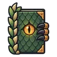 คัมภีร์เกล็ดแร็พเตอร์ | 84 | 123 | ลม | แร็พเตอร์ใบไม้ 0.12% |
| คัมภีร์อิมป์เปลวไฟ | 86 | 123 | ไฟ | อิมป์เปลวไฟ 0.12% |
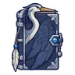 คัมภีร์นกกระสาเงา | 88 | 118 | มืด | นกกระสาเงา 0.06% |
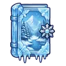 คัมภีร์ทะเลสาบน้ำแข็ง | 90 | 118 | น้ำ | ก้อนแมกมาแตกตัว 0.06% |
| คัมภีร์จันทร์เพ็ญ | 92 | 118 | ศักดิ์สิทธิ์ | ผลึกดาวมีชีวิต 0.06% |
| คัมภีร์มังกรลาวา | 95 | 161 | ไฟ | หัวใจมังกรลาวา 0.5% |
| คัมภีร์แสงดาวนิรันดร์ | 99 | 174 | ศักดิ์สิทธิ์ | ดรอปทั่วโลก Lv 90+ |